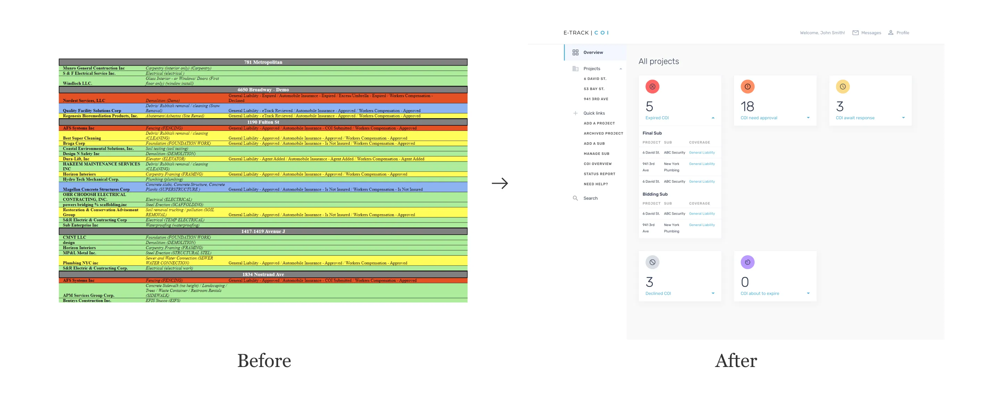
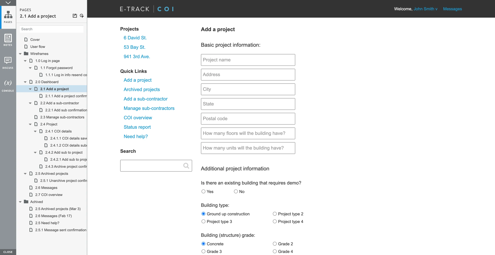

Redesigning E-Track COI: Enhancing User Satisfaction Through Strategic UX
by Chuan Tan · 2 min read
Overview
E-Track COI is an automated online tracking and record-keeping tool that streamlines the insurance and certificate approval process for general contractors. As the business expanded, they sought to hire a UX professional for the first time to redesign their tool. I joined the project as both the researcher and designer.
The Challenge
A heuristic evaluation revealed that the existing tool was overwhelming users with various types of information, lacking clear categorization and hierarchy. The visual layout needed enhancement, and overall interaction improvements were necessary.
The Outcome
The platform saw a 24% increase in adoption.
Before and after of the E-track COI app
User Research
To validate the heuristic evaluation findings, I conducted interviews with six customers using cognitive task analysis and comprehension studies. This research confirmed the initial hypothesis and uncovered highly requested functionalities, such as email notifications and categorization of subcontractor types (final, bidding, and inactive).
Interaction Design
Based on research insights, I developed user story workflows and wireframes, which helped define the project scope and timeline. This clarity enabled developers to estimate the required effort effectively.
An example of the interactive wireframes
Interface Design
I recommended purchasing a UI kit to the business owner and customized it to align with the company’s visual identity. This approach ensured consistency across all pages.

An example of the UI design
Conclusion
Initially skeptical about the value of user research, the business owner was convinced by the feature requests gathered during interviews. The implementation of new features and interface improvements led to increased adoption of E-Track COI.
View more projects